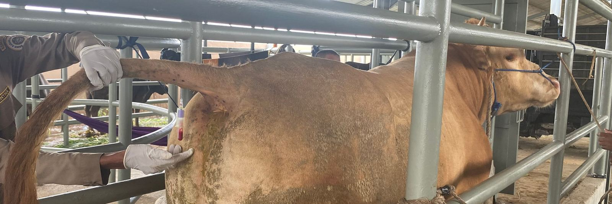

How to tail bleed a cow
This is the cattle and bison procedure. Goats and sheep are drawn from the jugular vein instead; see goats and sheep further down this page.
Pregnancy samples ship with the Cattle-Bison Pregnancy Test Submission Form (PDF). Blood for BVD PI testing is drawn from cattle the same way but ships cold, with the BVD PI Test Submission Form (PDF). See packing and shipping.
Before you start
Before you start, restrain the cow in a chute, headgate or stanchion, and stand to the side of her hindquarters rather than directly behind her. Wear gloves when handling needles and tubes.
Have these within reach:
- Vacutainer needles, a new one for each cow
- A needle holder
- Red-top Vacutainer tubes, one for each animal
- Gloves
- Something to label each tube with the animal identification
- An ice rack or refrigerator for the filled tubes
- A sharps container
You can use a syringe instead of the Vacutainer system: same spot, same 2cc, then transfer the blood to a red-top tube.
Where the needle goes
One step at a time
Tap Next step to continue, or use the arrow keys on a keyboard.
The tail bleeding procedure
- Screw the Vacutainer needle onto the needle holder.
- Insert the Vacutainer tube into the other end of the needle holder until the stopper touches the back portion of the needle. Do not puncture the stopper. Hold these assembled materials in one hand.
- Lift the cow's tail with your other hand.
- Find the spot: on the underside of the tail at the midline, about 3 to 6 inches from the base, there is a ridge of skin running lengthwise.
- Push the needle through that ridge, straight in and perpendicular to the tail, about 1/2 inch deep.
- Blood will appear at the junction of the stopper and the back portion of the needle once the vein is punctured. If it does not appear, pull the needle out slightly and insert it in a different direction until the vein is punctured.
- Once blood is seen, push the tube onto the needle and keep the needle under the skin. If it slips out, the vacuum is lost and blood stops flowing; use a second tube if that happens.
- Collect 2cc or more of blood.
- Withdraw the needle from the skin and remove the tube from the tube holder.
- Label the tube with the animal identification.
- Place the tube in an ice rack or refrigerator until shipment. Pregnancy tubes ship without ice; chilling only keeps them fresh until the box goes out. BVD blood is the exception: it ships with ice packs and must reach the lab within 48 hours of collection.
- Discard the needle into a sharps container and re-use the needle holder. Use a new needle for each cow.
Questions about the procedure? Call us at (715) 653-2201 or email us.
Goats and sheep: the jugular vein

Goats and sheep are not tail bled. The sample comes from the jugular vein on the side of the neck. Have a helper hold the animal against a wall or in a stanchion with the head raised and turned slightly away. Press a thumb into the jugular groove low on the neck so the vein fills, slide a new needle into the raised vein at a shallow angle, draw 2cc into the same red-top tube, and release the thumb before you withdraw. Label the tube and use a new needle for every animal.
If your crew has not drawn from the neck before, ask your veterinarian to show them once; it takes minutes to learn. The samples ship with the Small Ruminant Pregnancy Test Submission Form (PDF) and need no ice.
For timing and what each result means, see pregnancy testing for goats and sheep.